من الملعب إلى قاعات صنع القرار: ما نفذناه مع شباب دور الرعاية وأسرهم، بالأخبار والصور.
من أرقام بصمة نور قبل التأسيس الرسمي وبعده، وهي بعض ما أنجزناه على سبيل المثال لا الحصر
تنظيم البطولة بمشاركة 282 لاعباً ولاعبة يمثلون 23 دار رعاية، وتضمنت حفلي افتتاح وختام، وتوفير الأطقم والجوائز الرياضية للمشاركين. وتهدف البطولة إلى اكتشاف المواهب وتوفير مسارات للتدريب والعمل.
المشاركة في تنظيم المعسكر بدعوة رسمية من وزارة الشباب والرياضة، والذي استهدف 400 طفل يتيم من 27 محافظة لاكتشاف الموهوبين ودعمهم.
حصول فريق الجمعية على المركز الثالث في البطولة.


إعداد ونقل وتوزيع 150 وجبة ساخنة يومياً على مدار 29 يوماً في شهر رمضان، وتوزيع شنط رمضان لدعم خريجي دور الأيتام وأسرهم في المعادي وبدر و15 مايو والسلام والعبور. ونُفذت الحملة بالتعاون مع مؤسسة مرسال.
توزيع 160 قطعة أثاث على 400 مستفيد.
تنفيذ قافلة طبية متكاملة في تخصصات مختلفة بالتنسيق مع مؤسسة إبراهيم أحمد بدران، قدمت خدماتها لـ 120 مستفيداً.
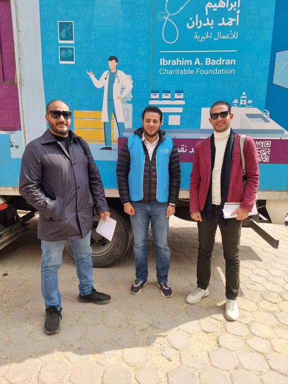


توفير أكثر من 150 فرصة عمل لشباب دور الأيتام.
بالتعاون مع الجامعة الفرنسية في مصر، قدمنا كورسات Soft Skills وICDL لـ 25 من شباب دور الرعاية في أبريل ومايو، تأهيلاً لمرحلة الخروج من الدار. حاضر فيها دكاترة متخصصون من الجامعة، ونجح 20 شاباً واستلموا شهادات التخرج. كما وفرنا 20 منحة تدريبية.
35 دعوة رسمية للجمعية للمشاركة بقمة ستارت بالمتحف المصري للتدريب وتوفير فرص العمل.
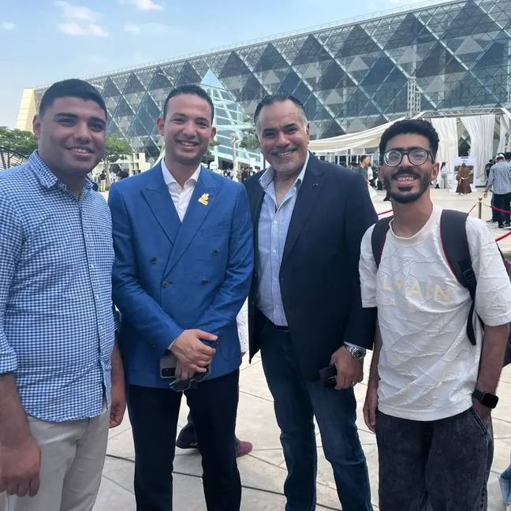

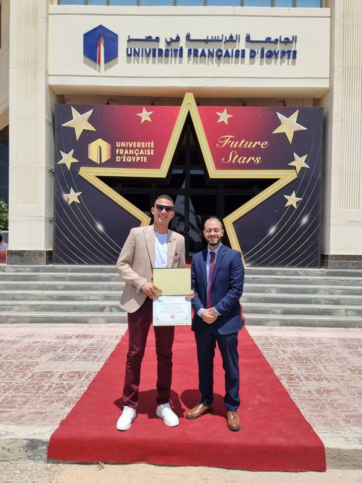

إطلاق المرصد لتصحيح صورة الأيتام في الدراما، ورصد أكثر من 160 تغطية إعلامية وصحفية في كبرى المنصات التلفزيونية والرقمية والمطبوعة.
حملات توعية وأيام رياضية داخل 3 مدارس و7 جامعات، منها الجامعة الأمريكية والكندية والروسية والفرنسية، لإبراز النماذج الناجحة والحد من الوصمة المجتمعية التي تلاحق شباب دور الأيتام.
شراكة مع مؤسسة Dialogue in the Dark لتنفيذ رحلات توعوية لـ 180 مستفيداً.
مشاركة أعضاء من الجمعية في حلقة وثائقية بمسلسل أولاد الشمس لعرض نماذج حقيقية وإيجابية. وبالتعاون مع الجامعة الكندية، نُفذ مشروع تخرج لطلبة الجامعة: فيديو وثائقي يوضح الصورة الحقيقية لدور الأيتام بعد المسلسل.
يوم للتوعية وورشة آداب زيارة دور الأيتام لموظفي الشركة، بحضور رئيس مجلس إدارتها ومدير الهيئة العامة للبترول ومدير المسؤولية المجتمعية.
المشاركة في بودكاست هنا التضامن، وتغطيات صحفية وتلفزيونية ورقمية.

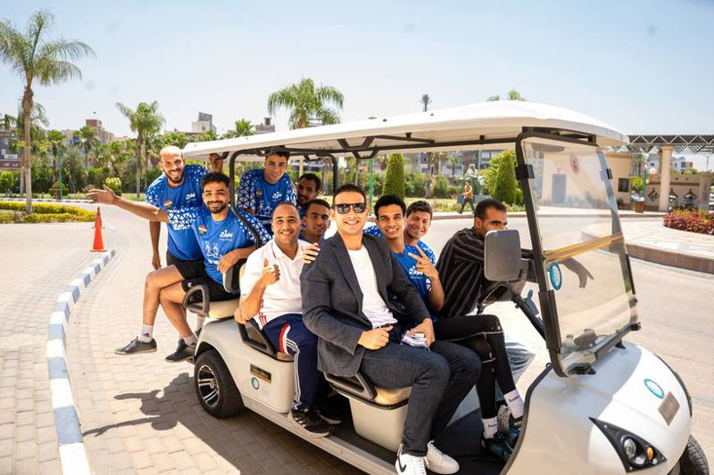


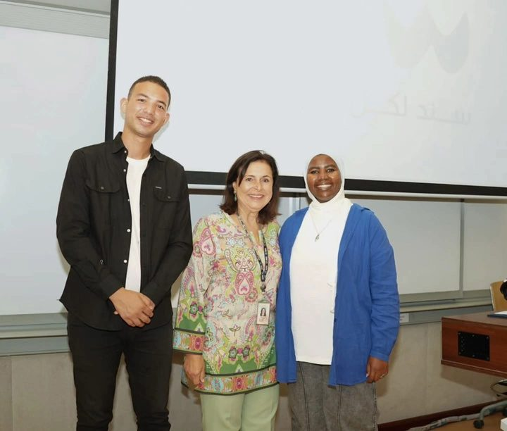
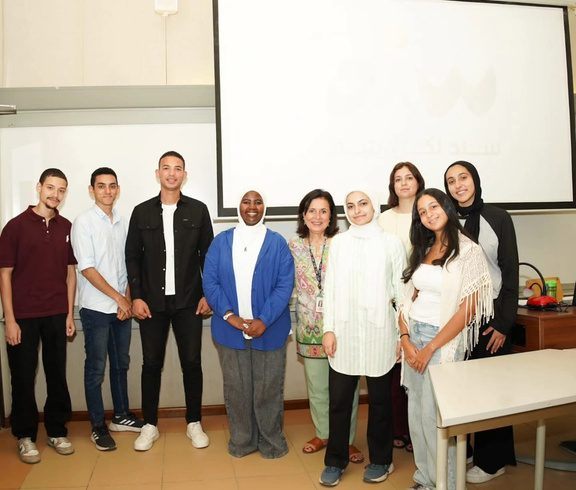
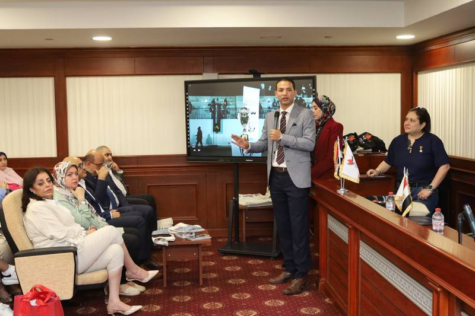

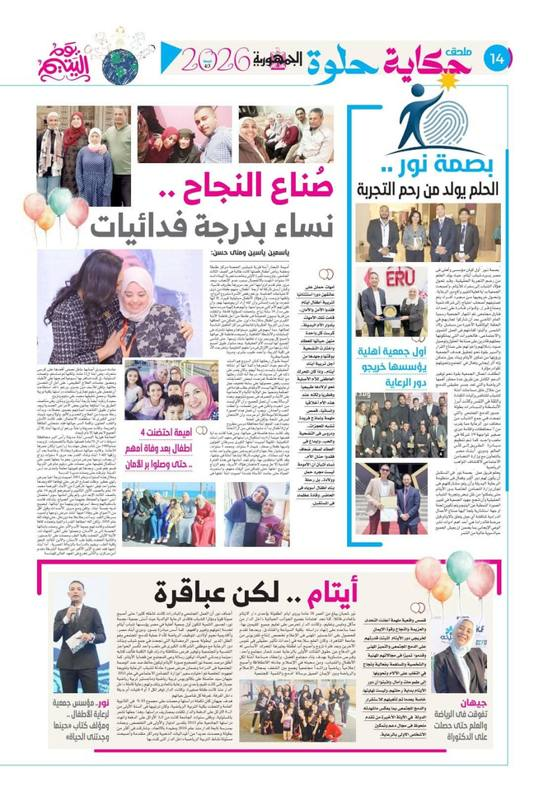
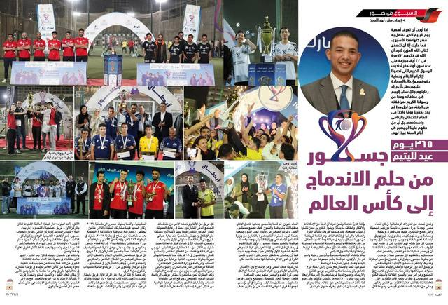

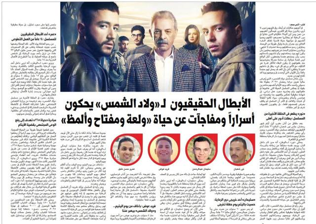
تلبية دعوة رسمية داخل مجلس النواب المصري لتمثيل الشباب الأيتام، وعقد لقاءات مع قيادات وزارتي التضامن الاجتماعي والشباب والرياضة لنقل تجربة الشباب لصناع القرار.
المشاركة في سيمنار مؤسسة ساموسيال بالتعاون مع الاتحاد الأوروبي حول الأمهات البديلات في خطر الشارع.
المشاركة في مؤتمر عن حياة خريجي دور الأيتام بعد سن الـ18.
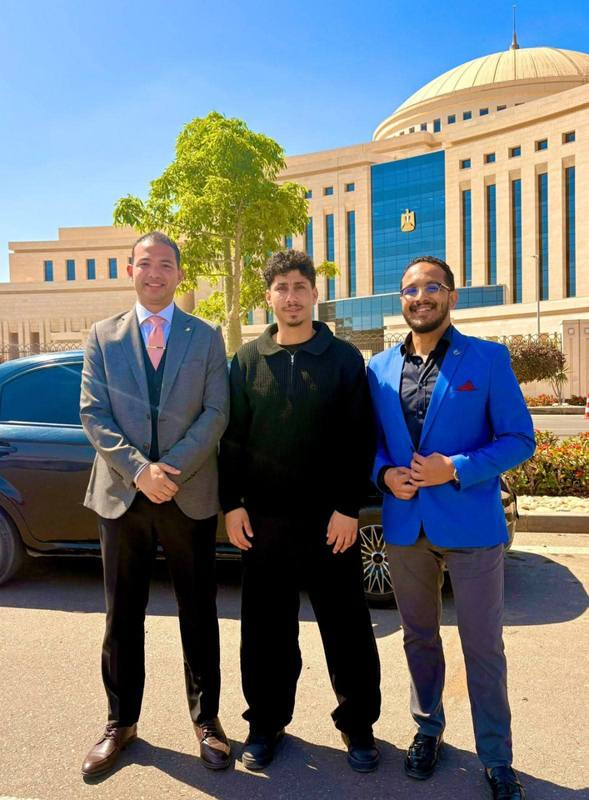


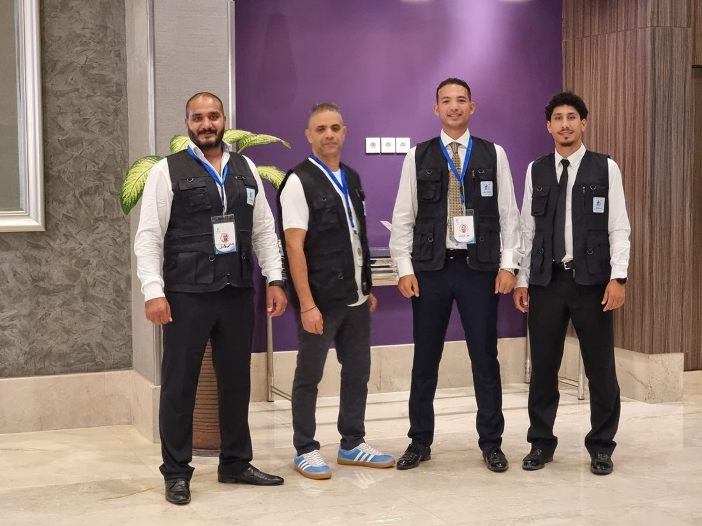
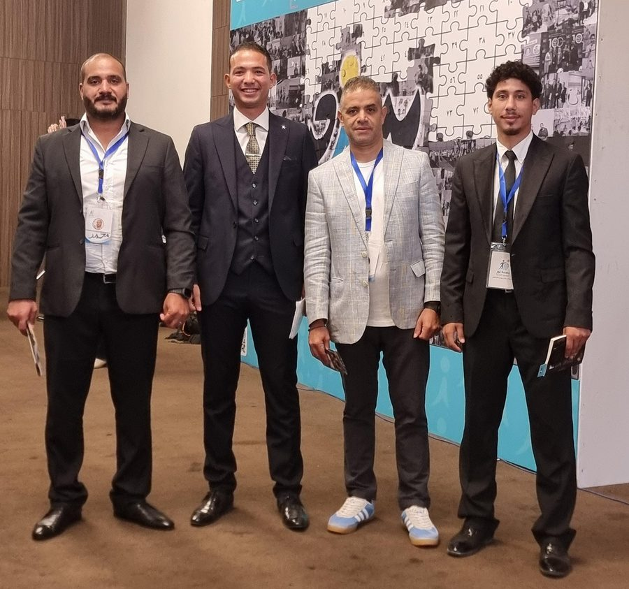

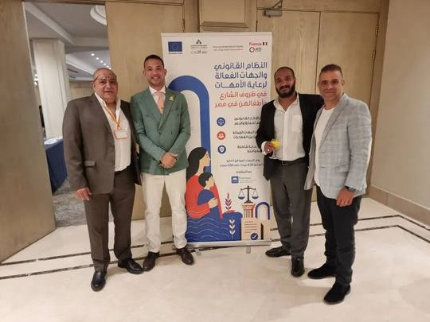
مشاركة 30 متطوعاً في إدارة الأنشطة والمبادرات الميدانية.
المشاركة في اليوم التطوعي الذي نظمته شركة ميدور للبترول بدار السندس للأيتام.
إنهاء وتجهيز المقر الإداري للجمعية وتوفير السجلات والأدوات اللازمة لبيئة عمل مؤسسية قادرة على إدارة وتطوير المشروعات بكفاءة.

للشراكة أو الرعاية أو التطوع، تواصل معنا على basmatnour.org@gmail.com